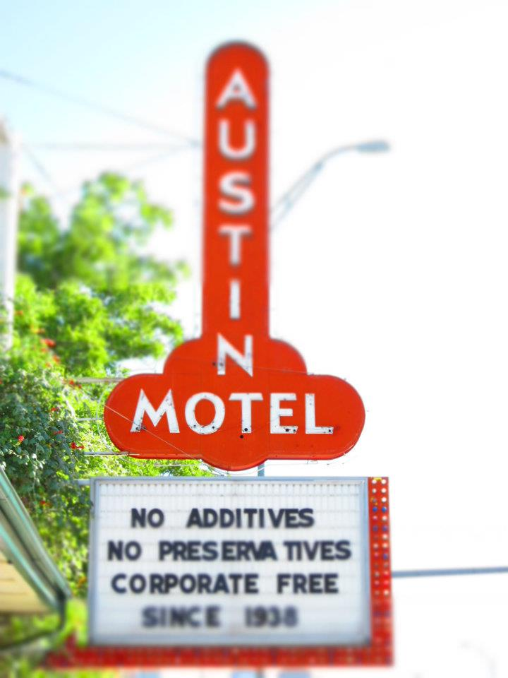
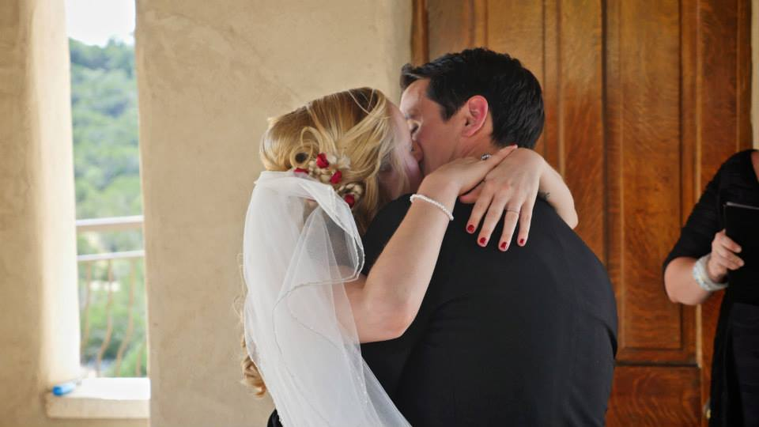
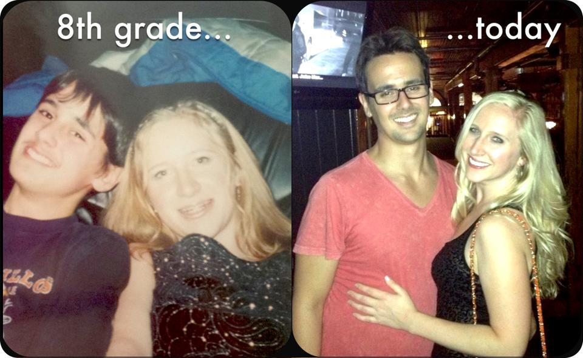
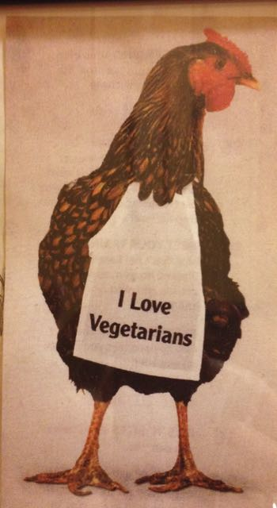
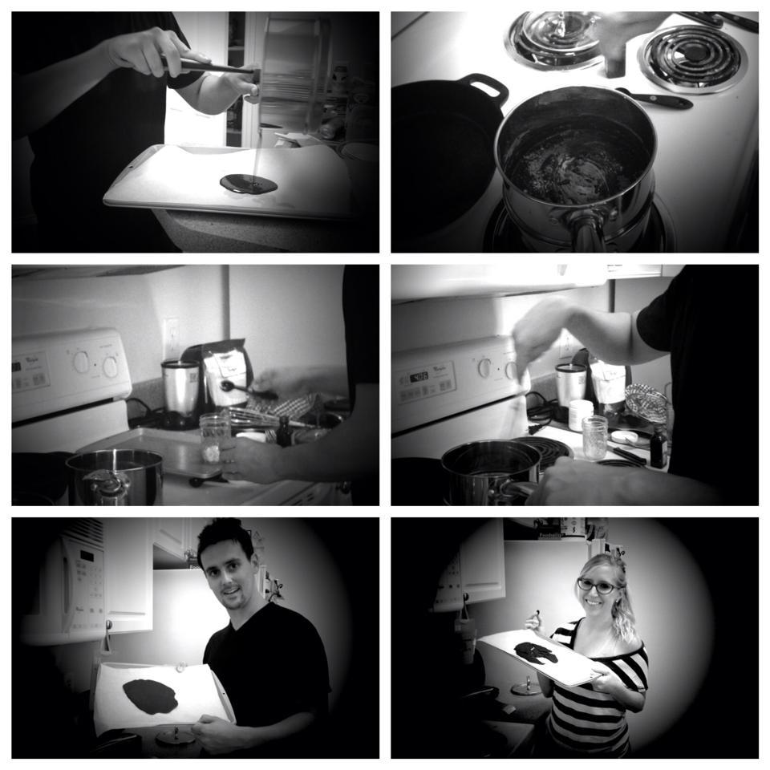
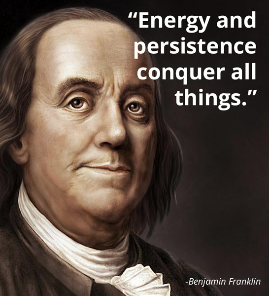

I was born and raised in a small, country town in the heart of NC.
I attended college at the University of North Carolina at Wilmington, where I graduated in 2011 with my BS in Public health.

After graduation, I moved to Blacksburg, VA to attend Virginia Tech's Master's of Public Health program, concentrating in Epidemiology. However, upon visiting the financial aid office to apply for a Stafford loan of $20,000/year + a Grad Plus loan for $20,000/year, bringing my total to $40,000/year for a MPH....I nearly had a panic attack and decided to drop out and actually work in public health for a while before committing to that much student loan debt. BEST DECISION EVER!
Shortly, after I moved to super-fun Austin, TX!

Working in public health was sucking the life out of me. So, I knew I had to do something else. Given my education background, and love for hard sciences (biochem, bio, human anatomy and physiology, etc.), I figured going to Med School was my best option. Then Phillip (my then boyfriend, now husband, who is a software engineer) asked me the question that changed my life, "Why not do software development like me?"
I couldn't afford much, so I did the self-taught route. I studided my bum off for 6 months, and eventually landed an internship through networking and attending career fairs geared towards interns/students.

I worked as in intern for the past year; however, the internship I was promised was not the reality. I worked alone, not having anyone to learn from, and was expected to build a full-stack Groovy and Grails application, which I had absolutely no experience doing. I only knew SQL and Java, a little Ruby, and had never actually built an application before. I somehow managed to get something up and working, but it was untested, spaghetti code. Eventually, the application started falling apart(bugs, bugs everywhere!).
My internship brunt me out. I needed change in my life. So, I quit my internship, got married (August 2014), and moved to Boulder (November 2014)!

I grew up doing musical theater. I love to sing and dance.
My husband, Phillip, and I were child-hood sweethearts. He's been my BFF since we were 6.
I am a vegetarian, and a bit of a health freak :-)
Wine and chocolate always put me in a better mood...on that note, I actually make my own dark chocolate.
My super, duper-duper great uncle is Benjamin Franklin.